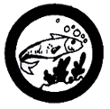

Fish Culture
- Tell the history of fish conservation in the Philippines. Tell how the profession of fisheries management developed. Define fish management. Give examples and dates of fish management legislation. Explain why past fish management has been concerned mainly with the game animals.
- Describe five (5) different relationships between man and fish conservation.
- Describe the four methods used in fish management to maintain or increase numbers. Given an example of each in the Philippines.
- Name at least three (3) local plants used as fish food.
- Name the agencies responsible for fish culture. Tell the difference between their authorities and responsibilities. Describe opportunities for a career in one of these. Tell ho fishing laws are set in the Philippines.
- Do any one (1) of the following:
- Visit a managed fishing waters or a fish pond. Interview the resident manager. Write a 300-word essay on what is being done to improve the area for fish culture.
- Visit a fish hatchery. Interview the resident manager. Write a 300-word report on the place of fish hatchery in conservation.
- Go out for one day with a commercial fisherman. Describe his catch. Tell the methods used. Write about the importance of such fishing to the country's economy and health.
|